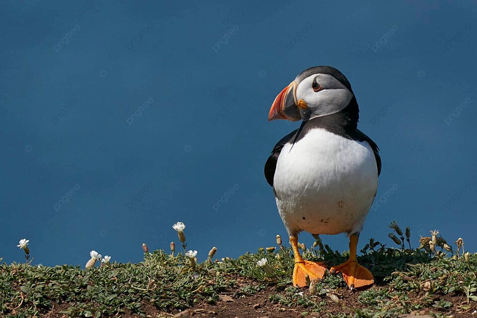
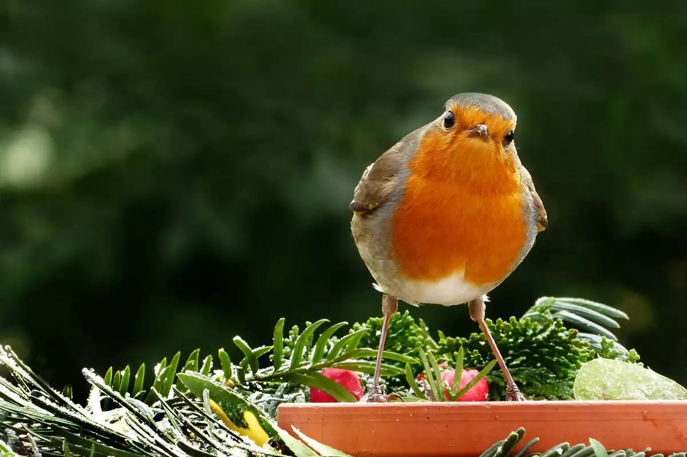
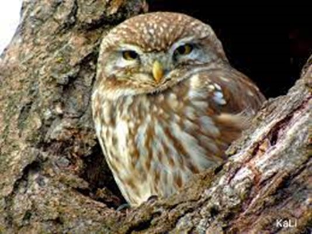
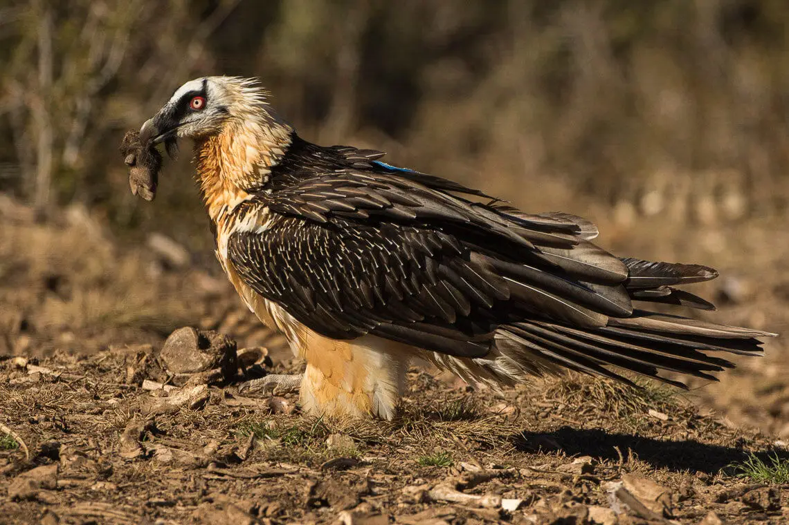
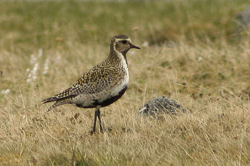

Европа
|  | Атлантически тъпоклюн | |
| Тъпоклюната кайра е птица от семейство Кайрови. Има характерна яркооцветена човка, особено през размножителния период. Има самоуверена и същевременно комична походка, което ѝ придава комичен вид. Крилата на тъпоклюната кайра служат за летене, но са приспособени и като плавници. Ципестите крака се използват при по-бавното придвижване във водата. Над окото има рогово триъгълниче със синкав оттенък, отдолу с черно ръбче. Човката е сплесната странично. | ||
{kind=link}
| Европейска червеношийка |  | |
| Червеногръдката е малка, непрелетна за България птица, достигаща дължина от около 14 см. Горната страна на тялото, крилата и опашката са маслинено зеленикавокафяви. Челото, бузите, гърлото и гърдите са ръждивочервени, а коремът – белезникав. Няма полов диморфизъм. Горната страна на тялото при младите екземпляри е кафява с капковидни петна. Гушата и гърдите им са охреноръждиви с вълнообразни тъмни ивици. | ||
{kind=link}
|  | Kукумявка | |
| Дължина на тялото: 22 cm. Размах на крилете: 56 cm. Има малки възрастови различия. Възрастните отгоре са от жълтеникави до тъмнокафяви със светли петна, дребни и удължени по главата и едри по гърба и крилата, булото на лицето е белезникаво, а отдолу са белезникави до сиво-жълти, с петна. Младите са с пухкаво оперение и слабо изразени петна. От пернатоногата кукумявка се отличава по малката глава, формата на петната по гърба и корема при възрастните и по петната по корема при младите. Често издава крясъци „ку-ку-мяу“, „куку-куку-мяу“. | ||
{kind=link}
| Брадат лешояд |  | |
| Храни се основно с мърша и кости от умрели животни, които вдига във въздуха и пуска от високо, за да се строшат и станат подходящи за храна. Чупи черупката на костенурки по подобен начин преди да ги изяде. Понякога улавя някои по-слабо подвижни и дребни животни. Размахът на крилата достига до 2,5 m, а дължината на тялото – до 1,1 m. Диаметърът на гнездото е до 2 m. В продължение на няколко десетилетия единственият зоопарк в света, където в плен се размножават брадати лешояди е Софийската зоологическа градина. Там от 1916 до 1927 г. една двойка излюпва 11 малки. | ||
{kind=link}
|  | Златиста булка | |
| Златистата булка е водолюбива птица от семейство Дъждосвирцови. За оперението е характерен сезонен диморфизъм. Гърбът, крилата отгоре и тилът през всички сезони са на златистожълти и черни петна. През лятото коремът, гърдите, шията и бузите са черни, разделени от останалото оперение с бяла ивица, а през есенно-зимния период са бежово-бели. Извън размножителния период прилича на сребристата булка, като се отличава от нея по липсата на черно петно на подмичничните пера. | ||
{kind=link}